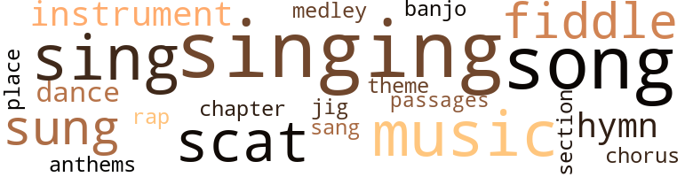
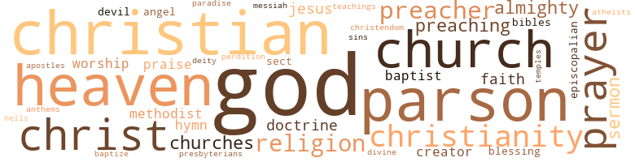

Clotel; Or, the President's Daughter: A Narrative of Slave Life in the United States, by Brown, William Wells (1853)
55 music-related terms matched in this text.
Most frequent terms in this topic: singing (8); song (5); music (5); sing (4); sung (3)
banjo.n.01
Definition: a stringed instrument of the guitar family that has long neck and circular body
| word | sentence |
|---|---|
| banjo | " Hang up the shovel and the hoe , Take down the fiddle and the bow , We 'll dance end sing , And make the forest ring , With the fiddle and the old banjo . " |
chapter.n.01
Definition: a subdivision of a written work; usually numbered and titled
| word | sentence |
|---|---|
| chapter | Carlton hud already selected a chapter in the Bible to read to them , which he did , after first prefacing it with some remarks of his own . |
chorus.n.01
Definition: any utterance produced simultaneously by a group
| word | sentence |
|---|---|
| chorus | The piece was sung by Sam , the others joining in the chorus , and was as follows : Sam . |
dance.n.01
Definition: an artistic form of nonverbal communication
| word | sentence |
|---|---|
| dance | Some minutes stood matters thus , and the cries of the hull , mingled with the hoarse growls of the bear , made hideous music , fit only for a dance of devils , Then came a pause ( the hear having relinquished his hold ) , and for a few minutes it was doubtful whether the fun was not up . |
dance.v.03
Definition: skip, leap, or move up and down or sideways
| word | sentence |
|---|---|
| dance | " Hang up the shovel and the hoe , Take down the fiddle and the bow , We 'll dance end sing , And make the forest ring , With the fiddle and the old banjo . " |
hymn.n.01
Definition: a song of praise (to God or to a saint or to a nation)
| word | sentence |
|---|---|
| anthems | If you could , you would turn heaven into Birmingham , make every angel a weaver , and with the eternal din of looms and spindles drown all the anthems of the morning stars . |
| hymn | " Uncle Simon , you may strike up a hymn , " said the preacher as he closed his Bible . |
| hymn | A moment more , and the whole company ( Carlton excepted ) bad joined in the well known hymn , commencing with " When I can read my title clear To mansions in the sky . " |
| hymn | I wont ask you to drop a tear , but brother Bohow will please raise a hymn while we fill up the grave . ' " |
jig.n.01
Definition: music in three-four time for dancing a jig
| word | sentence |
|---|---|
| jig | Well , thinks I to myself , the jig 's up : I sha 'n' t get any more liquor till I get out of the state . " |
medley.n.01
Definition: a musical composition consisting of a series of songs or other musical pieces from various sources
| word | sentence |
|---|---|
| medley | " Who can , with patience , for a moment see The medley mass of pride and misery , Of whips and charters , manacles and rights , Of slaving blacks and democratic whites , And all the piebald policy that reigns In free confusion o'er Columbia 's plains ? |
music.n.01
Definition: an artistic form of auditory communication incorporating instrumental or vocal tones in a structured and continuous manner
| word | sentence |
|---|---|
| music | The moon was just appearing through the tops of the trees , and the animals and insects in an adjoining wood kept up a continued din of music . |
| music | Hear the voice of prayer to God for his protection , and the glorious music of praise , as it breaks into the wild tempest of the mighty deep , upon the ear of God . |
| music | How difficult to realise that the eye which always glowed with affection and intelligence - that the ear which had so often listened to the sounds of sorrow and gladness - that the voice whose accents had been to us like sweet music , and the heart , the habitation of benevolence and truth , are now powerless and insensate as the bier upon which the form rests . |
| music | Some minutes stood matters thus , and the cries of the hull , mingled with the hoarse growls of the bear , made hideous music , fit only for a dance of devils , Then came a pause ( the hear having relinquished his hold ) , and for a few minutes it was doubtful whether the fun was not up . |
| music | It was like the plaintive eye of his forsaken one , like the music of sorrow echoed from an unseen world . |
musical_instrument.n.01
Definition: any of various devices or contrivances that can be used to produce musical tones or sounds
| word | sentence |
|---|---|
| instruments | The croaking of bull-frogs , buzzing of insects , cooing of turtle-doves , and the sound from a thousand musical instruments , pitched on as many different keys , made the welkin ring . |
| instrument | And if the said committee shall not so complete such purchase within said ten days , then the pew may be sold by the owner or owners thereof ( after payment of all such arrears ) to anyone respectable white person , but upon the same conditions as are contained in this instrument ; and immediate notice of such sale shall be given in writing , by the vendor , to the treasurer of said society . " |
| instrument | He is but the instrument in tho hands of despotism . |
passage.n.06
Definition: a short section of a musical composition
| word | sentence |
|---|---|
| passages | Are not infidels bound to believe that these professors , ministers , and churches understand their own Bible , and that , consequently , notwithstanding solitary passages which appear to condemn slaveholding , the Bible sanctions it ? |
place.v.16
Definition: sing a note with the correct pitch
| word | sentence |
|---|---|
| place | Carlton had drunk too deeply of the hitter waters of infidelity , and had spent too many hours over the writings of Rousseau , Voltaire , and Thomas Paine , to place that appreciation upon the Bible and its teachings that it demands . |
rap.n.05
Definition: genre of African-American music of the 1980s and 1990s in which rhyming lyrics are chanted to a musical accompaniment; several forms of rap have emerged
| word | sentence |
|---|---|
| rap | After passing a sleepless night , and hearing the clock strike six , he dropped into a sweet sleep , from , which he did not awake until roused by the rap of a servant , who , entering his room , handed him a note which ran as follows : - " Sir , - I owe you an apology for the inconvenience to which you were subjected last evening , and if you will honour us with your presence to dinner to-day at four o'clock , I shall be most happy to give you due satisfaction . |
scat.n.01
Definition: singing jazz; the singer substitutes nonsense syllables for the words of the song and tries to sound like a musical instrument
| word | sentence |
|---|---|
| scat | After the funeral , the family physician advised that Miss Peck should go to the farm , and spend the time at the country scat ; and also advised Carlton to remain with her , which ho did . |
| scats | The finest Baptist church in the city of Boston has the following paragraph in the deed that conveys its scats to pewholders ; " And it is a further condition of these presents , that if the owner or owners of said pew shall determine hereafter to sell the same , it shall first be offered , in writing , to the standing committee of said society for the time being , at such price as might otherwise be obtained for it ; and the said commilter shall have the right , for ten days after such offer , to purchase said pew for said society , at that price , first deducting therefrom all taxes and assessments on said pew then remaining unpaid . |
| scat | It was on a cold evening that Clotel arrived at Wheeling , and took a scat in the coach going to Richmond . |
| scats | When they had given vent to their feelings , they resumed their scats , ana each in turn related the adventures through which they had passed . |
section.n.01
Definition: a self-contained part of a larger composition (written or musical)
| word | sentence |
|---|---|
| section | If every man had his aliquot proportion of the injustice done in this land , by law and violence , the present freemen of the northern section would many of them commit suicide in self-defence , and would court the liberties awarded by Ali Pasha of Egypt to his subjects . |
sing.v.02
Definition: produce tones with the voice
| word | sentence |
|---|---|
| sing | " How prettily the negroes sing , " remarked Carlton , as they were wending their way towards the place from whence the sound of the voices came . |
| sing | " Oh , they make them up as they sing them ; they are all impromptu songs " By this time they were near enough to hear distinctly every word ; and , true enough , Sam 's voice was heard above all others . |
| sung | The piece was sung by Sam , the others joining in the chorus , and was as follows : Sam . |
| sing | " Hang up the shovel and the hoe , Take down the fiddle and the bow , We 'll dance end sing , And make the forest ring , With the fiddle and the old banjo . " |
| sung | On reaching the drawing-room , they found Sam snuffing the candles , and looking as solemn and as dignified as if he had never sung a song or laughed in his life . |
| sung | Bruin ' sung out ' at this , and made a dash for his opponent 's nose . |
| sing | It was now the bull 's turn to ' sing out , ' and he did it , bellowing forth with a voice more hideous than that of all the bulls of Bashan . |
| sang | Methodists sang , and Baptists immersed , and Presbyterians sprinkled , and Episcopalians read their prayers , while the ministers of the various sects preached that Christ died for all ; yet there were some twenty-five or thirty of us poor creatures confined in the ' Negro Pen , ' awaiting the close of the holy Sabbath , and the dawn of another day , to be again taken into the market , there to be examined like so many beasts of burden . |
singing.n.01
Definition: the act of singing vocal music
| word | sentence |
|---|---|
| singing | But even all this noise did not drown the singing of a party of the slaves , who were seated near a spring that was sending up its cooling waters . |
| singing | " Yes , " replied Georgiana ; " master Sam is there , I 'll warrant you : he 's always on hand when there 's any singing or dancing . |
| singing | We must not let them see us , or they will stop singing . " |
| singing | Do you think that was Sam we heard singing ? " |
| singing | Why , sir , I am an early riser , getting up before day ; and do you think that I am not awoke every morning in my life by the noise of their trowels at work , and their singing and noise before day ; and do you suppose , sir , that they stop or leave off work at sundown ? |
| singing | " As it is rather late , " said he , " we will leave the singing and praying for the last , and take our text , and commence immediately . |
| singing | After the singing , Sandy closed with prayer , and the following questions and answers read , and the meeting was brought to a close . |
| singing | Sam had a great wish to follow in the footsteps of his master , and be a poet ; and was , therefore , often heard singing doggrels of his own composition . |
song.n.01
Definition: a short musical composition with words
| word | sentence |
|---|---|
| songs | " Who makes their songs for them ? " inquired the young man . |
| songs | " Oh , they make them up as they sing them ; they are all impromptu songs " By this time they were near enough to hear distinctly every word ; and , true enough , Sam 's voice was heard above all others . |
| song | At the conclusion of each song they all joined in a hearty laugh , with an expression of " Dats de song for me ; " " Dems dems . " |
| song | At the conclusion of each song they all joined in a hearty laugh , with an expression of " Dats de song for me ; " " Dems dems . " |
| song | The song was not half finished before Carlton regretted that he had caused the young lady to remain and hear what to her must be anything but pleasant reflections upon her deceased parent . |
| song | On reaching the drawing-room , they found Sam snuffing the candles , and looking as solemn and as dignified as if he had never sung a song or laughed in his life . |
| song | " And see the servants met , Their daily labour 's o'er ; And with the jest and song they set The kitchen in a roar . " |
theme.n.03
Definition: (music) melodic subject of a musical composition
| word | sentence |
|---|---|
| theme | After a hearty laugh in which all joined , the subject of Temperance became the theme for discussion . |
violin.n.01
Definition: bowed stringed instrument that is the highest member of the violin family; this instrument has four strings and a hollow body and an unfretted fingerboard and is played with a bow
| word | sentence |
|---|---|
| fiddle | " Hang up the shovel and the hoe - Take down the fiddle and the bow - Old master has gone to the slaveholder 's rest ; he has gone where they all ought to go . |
| fiddle | " Hang up the shovel and the hoe , Take down the fiddle and the bow , We 'll dance end sing , And make the forest ring , With the fiddle and the old banjo . " |
| fiddle | " Hang up the shovel and the hoe , Take down the fiddle and the bow , We 'll dance end sing , And make the forest ring , With the fiddle and the old banjo . " |
whistle.v.05
Definition: make a whining, ringing, or whistling sound
| word | sentence |
|---|---|
| sings | They can run no longer ; the dogs are upon them ; they hastily attempt to climb a tree , and as the last one is nearly out of reach , the catch-dog seizes him by the leg , and brings him to the ground ; he sings out lustily and the dogs are called off . |
104 violence-related terms matched in this text.
Most frequent terms in this topic: fight (6); fought (6); killed (4); injury (4); pistol (4)
abhor.v.01
Definition: find repugnant
| word | sentence |
|---|---|
| abhors | Nature abhors it ; the age repels it ; and Christianity needs all her meekness to forgive it . |
abhorrence.n.01
Definition: hate coupled with disgust
| word | sentence |
|---|---|
| execration | With what execration should the statesman be loaded who , permitting one half the citizens thus to trample on the rights of the other , transforms those into despots and these into enemies , destroys the morals of the one part , and the amor patria of the other ! |
abrasion.n.01
Definition: an abraded area where the skin is torn or worn off
| word | sentence |
|---|---|
| scratch | Bruin would n't come to the scratch no way , till one of the keepers , with an iron rod , tickled his ribs and made him move . |
attack.v.01
Definition: launch an attack or assault on; begin hostilities or start warfare with
| word | sentence |
|---|---|
| assail | " There is an eye that wakes in light , There is a hand of peerless might ; Which , soon or late , shall yet assail And rend dissimulation 's veil : Which will unfold the masquerade Which justifies our own ' slave trade . ' " |
bleeding.n.01
Definition: the flow of blood from a ruptured blood vessel
| word | sentence |
|---|---|
| bleeding | The physician having a good business , and a large number of his patients being slaves , the most of whom had to call on the doctor when ill , he put Sam to bleeding , pulling teeth , and administering medicine to the slaves . |
| bleeding | In bleeding , he must have more bandages , and rub and smack the arm more than the doctor would have thought of . |
| bleeding | Long ere this we should have tested , in behalf of our bleeding and crushed American brothers of every hue and complexion , every new constitution , custom , or practice , by which inhumanity was supposed to be upheld , the injustice and cruelty they contained , emblazoned before the great tribunal of mankind for condemnation ; and the good and available power they possessed , for the relief , deliverance and elevation of oppressed men , permitted to shine forth from under the cloud , for the refreshment of the human race . " |
blister.v.02
Definition: subject to harsh criticism
| word | sentence |
|---|---|
| scalded | The killed and scalded ( nineteen in number ) were put on shore , and the Patriot , taken in tow by the Columbia , was soon again on its way . |
cannon.n.04
Definition: heavy automatic gun fired from an airplane
| word | sentence |
|---|---|
| cannon | You make merry on the 4th of July ; the thunder of cannon and ringing of bolls announce it as the birthday of American independence . |
| cannons | Yet while these cannons arc roaring and hells ringing , one-sixth of the people of this land arc in chains and slavery . |
contemn.v.01
Definition: look down on with disdain
| word | sentence |
|---|---|
| scorn | They scorn thy God , and thee ! " |
| despised | You all despised him - you all know his brother Joe , who lives on the hill ? |
| despised | Members ' in good and regular standing , ' fellowshipped throughout Christendom except by a few anti-slavery churches generally despised as ultra and radical , reduce their follow men to the condition of chattels , and by force keep them in that state of degradation . |
| despised | Ho voluntarily identified himself with the poor and the despised . |
envy.n.01
Definition: a feeling of grudging admiration and desire to have something that is possessed by another
| word | sentence |
|---|---|
| envy | The fairness of Clotel 's complexion was regarded with envy as well by the other servants as by the mistress herself . |
exterminate.v.01
Definition: kill en masse; kill on a large scale; kill many
| word | sentence |
|---|---|
| exterminating | When the measure of their tears shall be full - when their tears shall have involved heaven itself in darkness - doubtless a God of justice will awaken to their distress , and by diffusing light and liberality among their oppressors , or at length by his exterminating thunder , manifest his attention to things of this world , and that they are not left to the guidance of blind fatality . " |
fight.n.05
Definition: a boxing or wrestling match
| word | sentence |
|---|---|
| fight | she fought the fight , obtained the Christian 's victory , and wears the crown . |
| fights | Taking a New Orleans newspaper from his pocket he continued , " Just look here , there are not less than three advertisements of bull fights to take place on the Sabbath . |
| fight | " Here is an account of a grand bull fight that took place in New Orleans a week ago last Sunday . |
| fight | And the minister read aloud the following : " Yesterday , pursuant to public notice , came off at Gretna , opposite the Fourth District , the long heralded fight between the famous grizzly bear , General Jackson ( victor in fifty battles ) , and the Attakapas bull , Santa Anna . |
| fight | Long before the published hour , the quiet streets of the rural Gretna were filled with crowds of anxious denizens , flocking to the arena , and before the fight commenced , such a crowd had collected as Gretna had not seen , nor will be likely to see again . |
fight.v.02
Definition: fight against or resist strongly
| word | sentence |
|---|---|
| fought | But Harry had great courage and fought the dogs with a big club ; and papa seeing the negro would escape from the dogs , shot at him , as he says , only to wound him , that he might be caught ; but the poor fellow was killed . " |
| fought | Who fought more bravely for American independence than the blacks ? |
| fought | she fought the fight , obtained the Christian 's victory , and wears the crown . |
| fought | He had fought some fifty bulls ( so they said ) , always coming out victorious , hut that either one of the fifty had been an Attakapas bull , the bills of the performances did not say . |
| fought | Had he tackled Attakapas first it is likely his fifty battles would have remained un fought . |
| fight | He had heard his master and visitors speak of the down-trodden and oppressed Poles ; he heard them talk of going to Greece to fight for Grecian liberty , and against the oppressors of that ill-fated people . |
| fought | You say your fathers fought for freedom - so did we . |
| fight | He had stopped in a swamp to fight the dogs , when the party who were pursuing him came upon him , and commanded him to give up , which he refused to do . |
flog.v.01
Definition: beat severely with a whip or rod
| word | sentence |
|---|---|
| flog | haste , and join your effortS , The priceless gilt to speed ; Then flog the trembling negro If he should learn to read . " |
| flogging | Harry had been , to see her , and did not return quite as early as he should ; and Huckelby was flogging him , and he got away and came here . |
| flogged | I wanted papa to keep him in town , so that he could see his wife more frequently ; but he said they could not spare him from the farm , and flogged him again , and sent him back . |
| flogged | " I was afraid , " replied Salome , " for I was once severely flogged for telling a stranger that I was not born a slave . " |
| lathers | I have known statesmen , lawyers , and judges whom it has killed - kind husbands and lathers whom it has turned into monsters . |
| flogging | This chastisement was given because the negro grumbled , and found fault with his master for flogging his wife . " |
fury.n.01
Definition: a feeling of intense anger
| word | sentence |
|---|---|
| fury | No graves were dug for the negroes ; their dead bodies became food for dogs and vultures , and their bones , partly calcined by the sun , remained scattered about , as if to mark the mournful fury of servitude and lust of power . |
| rage | After all hope of getting Dinah was gone , the slave-owner in a rage said to the Friend , " My nigger is not here . " |
gag.v.06
Definition: cause to retch or choke
| word | sentence |
|---|---|
| choked | Her voice was choked for utterance , and the tears flowed freely , as she bent her lips toward him . |
grudge.n.01
Definition: a resentment strong enough to justify retaliation
| word | sentence |
|---|---|
| grievances | The grievances of which your fathers complained , and which caused the Revolutionary War , were trifling in comparison with the wrongs and sufferings of those who were engaged in the late revolt . |
gun.n.01
Definition: a weapon that discharges a missile at high velocity (especially from a metal tube or barrel)
| word | sentence |
|---|---|
| gun | After this man was secured , the one in the tree was ordered to come down ; this , however , he refused to do , but a gun being pointed at him , soon caused him to change his mind . |
| gun | Mr. Roberson , one of the party , gave him several blows on the head with a rifle gun ; but this , instead of subduing , only increased his desperate revenge . |
| gun | then discharged his gun at the negro , and missing him , the hall struck Mr. Boon in the face , and felled him to the ground . |
hate.n.01
Definition: the emotion of intense dislike; a feeling of dislike so strong that it demands action
| word | sentence |
|---|---|
| hatred | We did not wish to encourage the Colonization Society , for it originated in hatred of the free coloured people . |
indignation.n.01
Definition: a feeling of righteous anger
| word | sentence |
|---|---|
| indignation | What indignation from all the would is not due to the government and people who put forth all their strength and power to keep in existence such an institution ? |
injury.n.01
Definition: any physical damage to the body caused by violence or accident or fracture etc.
| word | sentence |
|---|---|
| injuries | Aware of their blood connection with their owners , these mulattoos labour under the sense of their personal and social injuries ; and tolerate , if they do not encourage in themselves , low and vindictive passions . |
| injury | Three cheers rent the air as the young slave fell from the ladder when near the ground ; the white men took him up in their arms , to see if he had sustained any injury . |
| injury | After assuring him that she , not being the person condemned , would not receive any injury , he at last consented , and they began to exchange apparel . |
| injury | Not far from Canal-street , in the city of New Orleans , stands a large two story flat building surrounded by a stone wall twelve feet high , the top of which is covered with bits of glass , and so constructed as to prevent even the possibility of any one 's passing over it without sustaining great injury . |
| injury | And must not all doubt be dissipated , when one of the most learned professors in our theological seminaries asserts that the Bible ' recognises that the relation may still exist , salva fide et salva ecclesia ' ( without injury to the Christian faith or church ) and that only ' the abuse of it is the essential and fundamental wrong ? ' |
invade.v.01
Definition: march aggressively into another's territory by military force for the purposes of conquest and occupation
| word | sentence |
|---|---|
| invading | - When on the banks of the Mobile I called you to take up arms , inviting you to partake the perils and glory of your white fellow citizens , I expected much from you. ; for I was not ignorant that you possessed qualities most formidable to an invading enemy . |
kill.v.10
Definition: cause the death of, without intention
| word | sentence |
|---|---|
| killed | But Harry had great courage and fought the dogs with a big club ; and papa seeing the negro would escape from the dogs , shot at him , as he says , only to wound him , that he might be caught ; but the poor fellow was killed . " |
| killed | The killed and scalded ( nineteen in number ) were put on shore , and the Patriot , taken in tow by the Columbia , was soon again on its way . |
| killed | I have known statesmen , lawyers , and judges whom it has killed - kind husbands and lathers whom it has turned into monsters . |
| killed | He was a large , tall , full-blooded negro , with a stern and savage countenance ; the marks on his face showed that he was from one of the barbarous tribes in Africa , and claimed that country as his native land ; his only covering was a girdle around his loins , made of skins of wild beasts which he had killed ; his only token of authority among those that he led , was a pair of epaulettes made from the tail of a fox , and tied to his shoulder by a cord . |
| killing | " You had a good master , " continued he , " and still you were dissatisfied ; you left your master and joined the negroes who were burning our houses and killing our wives . " |
knife.n.02
Definition: a weapon with a handle and blade with a sharp point
| word | sentence |
|---|---|
| knife | " A case has just taken place near here , wherda neighbour of ours , Mr. J. Higgerson , attempted tu correct a negro man in his employ , who resisted , drew a knife , and stabbed him ( Mr. H. ) in several places . |
| knife | He was then shot three times with a revolving pistol , and once with a rifle , and after having his throat cut , he still kept the knife firmly grasped in his hand , and tried to cut their legs when they approached to put an end to his life . |
madden.v.03
Definition: make mad
| word | sentence |
|---|---|
| maddened | Wild were the thoughts that passed round her aching heart , and almost maddened her poor brain ; thoughts which had almost driven her to suicide the night of that last farewell . |
massacre.v.01
Definition: kill a large number of people indiscriminately
| word | sentence |
|---|---|
| massacred | Without scruple and without pity , the whites massacred all blacks found beyond their owners ' plantations : the negroes , in return , set fire to houses , and put those to death who attempted to escape from the flames . |
molest.v.01
Definition: harass or assault sexually; make indecent advances to
| word | sentence |
|---|---|
| molest | Who can think of the broken hearts made whole , of sad and dejected countenances now beaming with contentment and joy , of the mother offering her free-born babe to heaven , and of the father whose cup of joy seems overflowing in the presence of his family , where none can molest or make him afraid . |
murder.n.01
Definition: unlawful premeditated killing of a human being by a human being
| word | sentence |
|---|---|
| murder | " Oh , the doctors are licensed to commit murder , you know ; and what 's the difference , whether one dies owing to the loss of blood , or taking too many pills ? |
musket_ball.n.01
Definition: a solid projectile that is shot by a musket
| word | sentence |
|---|---|
| ball | Blood followed the blow , and poor bruin , blinded , bleeding , and in mortal agony , turned with a howl to leave , but Attakapas caught him in the retreat , and rolled him over like a ball . |
| ball | A man at one of the tables where they were gambling had been seen attempting to conceal a card in his sleeve , and one of the party ' seized his pistol and fired ; but fortunately the barrel of the pistol was knocked up , just as it was about to be discharged , and the ball passed through the upper deck , instead of the man 's head , as intended . |
| balls | And at negro balls and parties , this class of women usually cut the greatest figure . |
| balls | To bring up Clotel and Althesa to attract attention , and especially at balls and parties , was the great aim of Currer . |
| ball | He dropped her hand as if a rifle ball had struck him ; and it was not until after long hesitation , that he began to make some reply about the necessity of circumstances . |
open_fire.v.01
Definition: start firing a weapon
| word | sentence |
|---|---|
| fired | A man at one of the tables where they were gambling had been seen attempting to conceal a card in his sleeve , and one of the party ' seized his pistol and fired ; but fortunately the barrel of the pistol was knocked up , just as it was about to be discharged , and the ball passed through the upper deck , instead of the man 's head , as intended . |
| fired | George , fired with the love of freedom , and zeal for the cause of his enslaved country men , joined the insurgen ts , and with them had been defeated and captured . |
pistol.n.01
Definition: a firearm that is held and fired with one hand
| word | sentence |
|---|---|
| pistols | To behold five or six tables in a steamboat 's cabin , with half-a-dozen men playing at cards , and money , pistols , bowie-knives , & c. all in confusion on the tables , is what may be seen at almost any time on the Mississippi river . |
| pistol | Just as the ladies and gentlemen were assembling at the supper-table , the report of a pistol was heard in the direction of the Social Hall , which caused great uneasiness to the ladies , and took the gentlemen to that part of the cabin . |
| pistol | A man at one of the tables where they were gambling had been seen attempting to conceal a card in his sleeve , and one of the party ' seized his pistol and fired ; but fortunately the barrel of the pistol was knocked up , just as it was about to be discharged , and the ball passed through the upper deck , instead of the man 's head , as intended . |
| pistol | A man at one of the tables where they were gambling had been seen attempting to conceal a card in his sleeve , and one of the party ' seized his pistol and fired ; but fortunately the barrel of the pistol was knocked up , just as it was about to be discharged , and the ball passed through the upper deck , instead of the man 's head , as intended . |
| pistol | He was then shot three times with a revolving pistol , and once with a rifle , and after having his throat cut , he still kept the knife firmly grasped in his hand , and tried to cut their legs when they approached to put an end to his life . |
punch.n.01
Definition: (boxing) a blow with the fist
| word | sentence |
|---|---|
| punch | The brandy punch had done its work . |
rape.n.03
Definition: the crime of forcing a woman to submit to sexual intercourse against her will
| word | sentence |
|---|---|
| assault | In a short time the officer returned , and they commenced an assault and battery upon the bam door , which soon yielded ; and in went the slaveholder and officer , and began turning up the hay and using all other means to find the lost property ; but , to their astonishment , the slave was not there . |
rifle.n.01
Definition: a shoulder firearm with a long barrel and a rifled bore
| word | sentence |
|---|---|
| rifles | At that moment the sharp ringing of several rifles was heard : the body of the negro fell a corpse on the ground . |
| rifle | Mr. Roberson , one of the party , gave him several blows on the head with a rifle gun ; but this , instead of subduing , only increased his desperate revenge . |
| rifle | He was then shot three times with a revolving pistol , and once with a rifle , and after having his throat cut , he still kept the knife firmly grasped in his hand , and tried to cut their legs when they approached to put an end to his life . |
| rifle | He dropped her hand as if a rifle ball had struck him ; and it was not until after long hesitation , that he began to make some reply about the necessity of circumstances . |
rush.v.02
Definition: attack suddenly
| word | sentence |
|---|---|
| rushed | Old remembrances rushed upon her memory , and caused her to shed tears freely . |
| rushed | Mr. Hobbs stooped to pick up a stick to strike the negro , and , while in that position , the negro rushed upon him , and caused his immediate death . |
sic.v.01
Definition: urge to attack someone
| word | sentence |
|---|---|
| set | As the two slaves above mentioned were travelling on towards the land of freedom , led by the Horth Star , they were set upon by four of these slave-catchers , and one of them unfortunately captured . |
| set | " " What price do you set on that boy ? " asked Johnson , as he took a roll of bills from his pocket . |
| set | " What are you wiping your eyes for ? " inquired a fat , red-faced man , with a white hat set on one side of his head , and a cigar in his mouth , of a woman who sat on one of the stools . |
slaughter.n.03
Definition: the savage and excessive killing of many people
| word | sentence |
|---|---|
| carnage | Thus carnage was added to carnage , and the blood of the whites flowed to avenge the blood of the blacks . |
| carnage | Thus carnage was added to carnage , and the blood of the whites flowed to avenge the blood of the blacks . |
suicide.n.01
Definition: the act of killing yourself
| word | sentence |
|---|---|
| suicide | If every man had his aliquot proportion of the injustice done in this land , by law and violence , the present freemen of the northern section would many of them commit suicide in self-defence , and would court the liberties awarded by Ali Pasha of Egypt to his subjects . |
| suicide | Wild were the thoughts that passed round her aching heart , and almost maddened her poor brain ; thoughts which had almost driven her to suicide the night of that last farewell . |
sword.n.01
Definition: a cutting or thrusting weapon that has a long metal blade and a hilt with a hand guard
| word | sentence |
|---|---|
| sword | His only weapon was a sword , made from the blade of a scythe , which he had stolen from a neighbouring plantation . |
| sword | ' Therefore , thus saith the Lord - ye have not hearkered unto me in proclaiming liberty every one to his brother , and every one to his neighbour - behold I proclaim a liberty for you saith the Lord , to the sword , to the pestilence , and to the famine . ' |
thrashing.n.01
Definition: a sound defeat
| word | sentence |
|---|---|
| thrashing | As I was passing the barn I heard uncle thrashing oats , so I went to the door and spoke to him . |
violence.n.01
Definition: an act of aggression (as one against a person who resists)
| word | sentence |
|---|---|
| violence | If every man had his aliquot proportion of the injustice done in this land , by law and violence , the present freemen of the northern section would many of them commit suicide in self-defence , and would court the liberties awarded by Ali Pasha of Egypt to his subjects . |
| violence | " When the violence of the disease approached the heart , the gums were blackened . |
weapon.n.01
Definition: any instrument or instrumentality used in fighting or hunting
| word | sentence |
|---|---|
| weapon | His only weapon was a sword , made from the blade of a scythe , which he had stolen from a neighbouring plantation . |
| weapons | The Bible furnishes to us the armour of proof , weapons of heavenly temper and mould , whereby we can maintain our ground against all attacks . |
weather.v.01
Definition: face and withstand with courage
| word | sentence |
|---|---|
| braves | " Tis ever thus with woman 's love , True till life 's storms have passed ; And , like the vine around the tree , It braves them to the last . " |
whip.v.04
Definition: strike as if by whipping
| word | sentence |
|---|---|
| lash | Not merely the slaveholder who cracks the lash . |
| lashing | " Once on the battle-field , both animals stood , like wary champions , eyeing each other , the hear cowering low , with head upturned and fangs exposed , while Attakapas stood wondering , with his eye dilated , lashing hie sides with his long and bushy tail , and pawing up the earth in very wrath . |
| lash | " Now back , jailor , back to thy dungeons , again , To swing the red lash and rivet the chain ! |
| lash | Your fathers were never slaves , ours are ; your fathers were never bought and sold like cattle , never shut out from the light of knowledge and religion , never subjected to the lash of brutal task-masters . |
wound.n.01
Definition: an injury to living tissue (especially an injury involving a cut or break in the skin)
| word | sentence |
|---|---|
| wound | " Missing this , the bull turned to the ' about face , ' and the bear caught him by the ham , inflicting a ghastly wound . |
wrath.n.01
Definition: intense anger (usually on an epic scale)
| word | sentence |
|---|---|
| wrath | that they are not to be violated but with his wrath ? |
| wrath | " Once on the battle-field , both animals stood , like wary champions , eyeing each other , the hear cowering low , with head upturned and fangs exposed , while Attakapas stood wondering , with his eye dilated , lashing hie sides with his long and bushy tail , and pawing up the earth in very wrath . |
| wrath | She felt that the step she had taken , in resolving never to meet Horatio again would no doubt expose her to his wrath , and probably cause her to be sold , yet her heart was too guileless for her to commit a crime , and therefore she had ten times rather have been sold as a slave than do wrong . |
265 religion-related terms matched in this text.
Most frequent terms in this topic: God (55); parson (20); heaven (16); church (15); Christian (15)
apostle.n.03
Definition: (New Testament) one of the original 12 disciples chosen by Christ to preach his gospel
| word | sentence |
|---|---|
| apostles | Shall we not then do as the apostles did ? |
atheist.n.01
Definition: someone who denies the existence of god
| word | sentence |
|---|---|
| atheists | I am afraid , " continued the daughter , " that the acts of the professed friends of Christianity in the South do more to spread infidelity than the writings of all the atheists which have ever been published . |
baptist.n.01
Definition: follower of Baptistic doctrines
| word | sentence |
|---|---|
| Baptist | " Oh yes , marser , John do Baptist ; I know dat nigger bery well indeed ; he libs in Old Kentuck , where I come from . " |
| Baptist | The old woman knew a slave near her old master 's farm in Kentucky , and was ignorant enough to suppose that he was the John the Baptist inquired about . |
| Baptists | Methodists sang , and Baptists immersed , and Presbyterians sprinkled , and Episcopalians read their prayers , while the ministers of the various sects preached that Christ died for all ; yet there were some twenty-five or thirty of us poor creatures confined in the ' Negro Pen , ' awaiting the close of the holy Sabbath , and the dawn of another day , to be again taken into the market , there to be examined like so many beasts of burden . |
baptize.v.01
Definition: administer baptism to
| word | sentence |
|---|---|
| baptize | Shall we not , in view of those things , use every laudable means to awaken our beloved country from the slumbers of death , and baptize all our efforts with tears and with prayers , that God may bless them . |
bible.n.02
Definition: a book regarded as authoritative in its field
| word | sentence |
|---|---|
| Bibles | The question turned upon the heathen of other lands , and the parson began to expatiate upon his own efforts in foreign missions , when his daughter , with a child-like simplicity , " Send Bibles to the heathen ; On every distant shore , From light that 's beaming o'er us , Let streams increasing pour But keep it from the millions Down-trodden at our door . |
| Bibles | " Send Bibles to the heathen , Their famished spirits feed ; Oh ! |
blessing.n.05
Definition: the act of praying for divine protection
| word | sentence |
|---|---|
| blessing | He folded her convulsively in his arms , and imprinted a long impassioned kiss on that mouth , which had never spoken to him but in love and blessing . |
| blessing | May we not claim of our God the blessing promised unto those who consider the poor : the Lord will preserve them and keep them alive , and they shall be blessed upon the earth ? |
christendom.n.01
Definition: the collective body of Christians throughout the world and history (found predominantly in Europe and the Americas and Australia)
| word | sentence |
|---|---|
| Christianity | This was a Southern auction , at which the bones , muscles , sinews , blood , and nerves of a young lady of sixteen were sold for five hundred dollars ; her moral character for two hundred ; her improved intellect for one hundred ; her Christianity for three hundred ; and her chastity and virtue for four hundred dollars more . |
| Christianity | Nature abhors it ; the age repels it ; and Christianity needs all her meekness to forgive it . |
| Christianity | unequivocally understood , that no fellowship can be held with slaveholders professing the same common Christianity as yourselves . |
| Christianity | Our domestic institutions can be maintained against the world , if we but allow Christianity to throw its broad shield over them . |
| Christianity | Nothing ever yet stood long against Christianity . |
| Christianity | She had had the opportunity of contrasting the spirit of Christianity and liberty in New England with that of slavery in her native state , and had learned to feel deeply for the injured negro . |
| Christianity | The daughter differed from both the father and his visitor upon the subject which they had been discussing , and as soon as an opportunity offered , she gave it as her opinion , that the Bible was both the bulwark of Christianity and of liberty . |
| Christianity | The father 's heart was touched ; and the sceptic , for the first time , was viewing Christianity in its true light ! |
| Christianity | I am afraid , " continued the daughter , " that the acts of the professed friends of Christianity in the South do more to spread infidelity than the writings of all the atheists which have ever been published . |
| Christendom | Members ' in good and regular standing , ' fellowshipped throughout Christendom except by a few anti-slavery churches generally despised as ultra and radical , reduce their follow men to the condition of chattels , and by force keep them in that state of degradation . |
christian.n.01
Definition: a religious person who believes Jesus is the Christ and who is a member of a Christian denomination
| word | sentence |
|---|---|
| Christians | Remcmber that , you are all Christians , all love the Lord , all want to go to heaven , all love your masters , and all love me . |
| Christian | " Do you feel that you are a Christian ? " asked he of a full-blooded negro that sat near him . |
| Christians | It appeared to him the best reason why professed Christians like himself should be slave-holders . |
| Christian | Four profound judges , four acute lawyers , twelve grave jurors , and I do n't know how many venerable witnesses , making in all about thirty men , perhaps , all engaged in the profound , laborious , and illustrious business , of finding out whether a man who pays tax , works on the road , and is an industrious farmer , has been born according to the republican , Christian constitution of Ohio - so that he can vote ! |
| CHRISTIAN | THE CHRISTIAN 'S DEATH . |
| Christian | Oh , what a silence pervaded the house when the Christian had been removed . |
| Christian | she fought the fight , obtained the Christian 's victory , and wears the crown . |
| Christians | To forbid second marriages in such cases would be to expose the parties , not only to stronger hardships and strong temptation , but to church censure for acting in obedience to their masters , who can not be expected to acquiesce in a regulation at variance with justice to the slaves , and to the spirit of that command which regulates marriage among Christians . |
| Christians | May these facts be pondered over by British Christians , and at the next anniversaries of the various religious denominations in London may their influence be seen and felt ! |
| Christians | The religious bodies of American Christians will send their delegates to these meetings . |
| Christian | Why , is it not better that Christian men should hold slaves than unbelievers ? |
| Christian | A silence followed this exhortation from the young Christian . |
| Christian | Tour fathers were poor ignorant and barbarous creatures in Africa , and the whites fitted out ships at great trouble and expense and brought you from that benighted land to Christian America , where you can sit under your own vine and fig tree and no one molest or make you afraid . |
| Christian | If the servant professes to be a Christian , ought he not to he as a Christian servant , an example to all other servants of love and obedience to his master ? |
| Christian | And , should his master be a Christian also , ought he not on that account specially to love and obey him ? |
| Christian | he is only doing his duty as a Christian . " |
| Christian | The Christian religion is opposed to slaveholding in its spirit and its principles ; it classes men-stealers among murderers ; and it is the duty of all who wish to meet God in peace , to discharge that duty in spreading these principles . |
| Christian | Moreover , those ministers and churches who do not themselves hold slaves , very generally defend the conduct of those who do , and accord to them a fair Christian , character , and in the way of business frequently take mortgages and levy executions on the bodies of their fellow men , and in some cases of their fellow Christians . |
| Christians | Moreover , those ministers and churches who do not themselves hold slaves , very generally defend the conduct of those who do , and accord to them a fair Christian , character , and in the way of business frequently take mortgages and levy executions on the bodies of their fellow men , and in some cases of their fellow Christians . |
| Christians | " Now is it a wonder that infidels , beholding the practice and listening to the theory of professing Christians , should conclude that the Bible inculcates a morality not inconsistent with chattelising human beings ? |
| Christian | The young Christian had indeed accomplished a noble work ; and whether it was admitted by the father , or not , she was his superior and his teacher . |
| Christian | He is a good neighbour , but a very ungodly man ; I want that you should see his people , and then , when you return to the North , you can tell how much better a Christian 's slaves are situated than one who does nothing for the cause of Christ . " |
| Christian | " She is a devoted Christian , and perfectly trustworthy . " |
church.n.02
Definition: a place for public (especially Christian) worship
| word | sentence |
|---|---|
| churches | And this , too , in a city thronged with churches , whose tall spires look like so many signals pointing to heaven , and whose ministers preach that slavery is a God-ordained institution ! |
| church | The writer of this is able to put that whole congregation , minister and all , to flight , by merely patting his coloured face in that church . |
| church | We once visited a church in New York that had a place set apart for the sons of Ham . |
| church | Unlike Plato and Socrates , her mind was free from the gloom that surrounded theirs ; her philosophy was founded in the school of Christianity ; though a devoted member of her father 's church , she was not a sectarian . |
| church | To forbid second marriages in such cases would be to expose the parties , not only to stronger hardships and strong temptation , but to church censure for acting in obedience to their masters , who can not be expected to acquiesce in a regulation at variance with justice to the slaves , and to the spirit of that command which regulates marriage among Christians . |
| church | The trader who brought you to New Orleans exhibited to me a certificate of your good character , and one from the minister of the church to which you were attached in Virginia ; and upon the faith of these assurances , and the love I bear you , I promise before high heaven that I will marry you as soon as it can be done . ' |
| church | Having thus acknowledged my resources , I invite the attention of my readers to the following statement , from which I leave them to draw their own conclusions : - " It is estimated that in the United States , members of the Methodist church own 219,363 slaves ; members of the Baptist church own 226 , OOO slaves ; members of the Episcopalian church own 88 , OOO slaves ; members of the Presbyterian church own 77 , OOO slaves ; members of all other churches own 5O , OOO slaves ; in all , 66O ,563 slaves owned by members of the Christian church in this pious democratic republic ! " |
| church | Marriage is , indeed , the first and most important institution of human existence - the foundation of all civilisation and culture - the root of church and state . |
| church | He surveys the church , and , lo ! |
| churches | Members ' in good and regular standing , ' fellowshipped throughout Christendom except by a few anti-slavery churches generally despised as ultra and radical , reduce their follow men to the condition of chattels , and by force keep them in that state of degradation . |
| church | And must not all doubt be dissipated , when one of the most learned professors in our theological seminaries asserts that the Bible ' recognises that the relation may still exist , salva fide et salva ecclesia ' ( without injury to the Christian faith or church ) and that only ' the abuse of it is the essential and fundamental wrong ? ' |
| churches | Are not infidels bound to believe that these professors , ministers , and churches understand their own Bible , and that , consequently , notwithstanding solitary passages which appear to condemn slaveholding , the Bible sanctions it ? |
church.n.04
Definition: the body of people who attend or belong to a particular local church
| word | sentence |
|---|---|
| church | The finest Baptist church in the city of Boston has the following paragraph in the deed that conveys its scats to pewholders ; " And it is a further condition of these presents , that if the owner or owners of said pew shall determine hereafter to sell the same , it shall first be offered , in writing , to the standing committee of said society for the time being , at such price as might otherwise be obtained for it ; and the said commilter shall have the right , for ten days after such offer , to purchase said pew for said society , at that price , first deducting therefrom all taxes and assessments on said pew then remaining unpaid . |
| Church | Such are the conditions upon which the Rowe Street Baptist Church , Boston , disposes of its seats . |
| church | The clock on a neighbouring church had scarcely ceased striking three , when the servant announced that a carriage had called for Mr. Green . |
| church | Having thus acknowledged my resources , I invite the attention of my readers to the following statement , from which I leave them to draw their own conclusions : - " It is estimated that in the United States , members of the Methodist church own 219,363 slaves ; members of the Baptist church own 226 , OOO slaves ; members of the Episcopalian church own 88 , OOO slaves ; members of the Presbyterian church own 77 , OOO slaves ; members of all other churches own 5O , OOO slaves ; in all , 66O ,563 slaves owned by members of the Christian church in this pious democratic republic ! " |
| church | Having thus acknowledged my resources , I invite the attention of my readers to the following statement , from which I leave them to draw their own conclusions : - " It is estimated that in the United States , members of the Methodist church own 219,363 slaves ; members of the Baptist church own 226 , OOO slaves ; members of the Episcopalian church own 88 , OOO slaves ; members of the Presbyterian church own 77 , OOO slaves ; members of all other churches own 5O , OOO slaves ; in all , 66O ,563 slaves owned by members of the Christian church in this pious democratic republic ! " |
| church | Having thus acknowledged my resources , I invite the attention of my readers to the following statement , from which I leave them to draw their own conclusions : - " It is estimated that in the United States , members of the Methodist church own 219,363 slaves ; members of the Baptist church own 226 , OOO slaves ; members of the Episcopalian church own 88 , OOO slaves ; members of the Presbyterian church own 77 , OOO slaves ; members of all other churches own 5O , OOO slaves ; in all , 66O ,563 slaves owned by members of the Christian church in this pious democratic republic ! " |
| churches | Having thus acknowledged my resources , I invite the attention of my readers to the following statement , from which I leave them to draw their own conclusions : - " It is estimated that in the United States , members of the Methodist church own 219,363 slaves ; members of the Baptist church own 226 , OOO slaves ; members of the Episcopalian church own 88 , OOO slaves ; members of the Presbyterian church own 77 , OOO slaves ; members of all other churches own 5O , OOO slaves ; in all , 66O ,563 slaves owned by members of the Christian church in this pious democratic republic ! " |
| church | Having thus acknowledged my resources , I invite the attention of my readers to the following statement , from which I leave them to draw their own conclusions : - " It is estimated that in the United States , members of the Methodist church own 219,363 slaves ; members of the Baptist church own 226 , OOO slaves ; members of the Episcopalian church own 88 , OOO slaves ; members of the Presbyterian church own 77 , OOO slaves ; members of all other churches own 5O , OOO slaves ; in all , 66O ,563 slaves owned by members of the Christian church in this pious democratic republic ! " |
| churches | Moreover , those ministers and churches who do not themselves hold slaves , very generally defend the conduct of those who do , and accord to them a fair Christian , character , and in the way of business frequently take mortgages and levy executions on the bodies of their fellow men , and in some cases of their fellow Christians . |
| churches | And must not this conclusion be strengthened , when they hear ministers of talent and learning declare that the Bible does sanction slaveholding , and that it ought not to be made a disciplinable offence in churches ? |
curate.n.01
Definition: a person authorized to conduct religious worship
| word | sentence |
|---|---|
| parson | The parson in his own drawing-room did not make a more imposing appearance than did his servant on this occasion . |
| parson | Thus ended the evening amongst the servants in the parson 's kitchen . |
| Parson | The planter evidently felt that his neighbour , Parson Peck , would have a nut to crack over the account that Carlton would give of the ignorance of the slaves , and said and did all in his power to remove the bad impression already made ; but to no purpose . |
| parson | The report made by Carlton , on his return , amused the parson very much . |
| parson | The question turned upon the heathen of other lands , and the parson began to expatiate upon his own efforts in foreign missions , when his daughter , with a child-like simplicity , " Send Bibles to the heathen ; On every distant shore , From light that 's beaming o'er us , Let streams increasing pour But keep it from the millions Down-trodden at our door . |
| parson | " What was it ? " inquired the parson . |
| parson | " No , my dear , " was the short reply : and the parson seemed anxious to change the conversation to something else . |
| parson | Being on a visit one day at the farm , and having with him several persons from the Free States , and wishing to make them believe that his slaves were happy , satisfied , and contented , the parson got out the whiskey and gave each one a dram , who in return had to drink the master 's health , or give a toast of some kind . |
| parson | The hot season was just commencing , and the young Northerner was talking of his return home , when the parson was very suddenly token ill . |
| parson | At the parson 's death his negroes showed little or no signs of grief . |
| parson | Young mistress sent me , at the peril of ray life , For the parson to come down and pray , For says she , ' Your old master is now about to die , ' And says I , ' God speed him on his way . ' |
| parson | Mr. Carlton cried , and so did I pretend ; Young mistress very nearly went mad ; And the old parson 's groans did the heavens fairly rend But l tell you I felt mighty glad . |
| parson | - Declaration of American Independence - The death of the parson was the commencement of a new era in the history of his slaves . |
| parson | Walker and the parson went into the saloon , talked over the matter , the bill of sale was made out , the money paid over , and the clergyman left , with the understanding that the woman should be delivered to him at his house . |
| parson | We shall now return to Natchez , where we left Currer in the hands of the Methodist parson . |
| parson | This was the parson 's country house , where the family spent only two months during the year . |
| parson | This was Georgiana , the only daughter of the parson . |
| parson | Carlton , though a schoolfellow of the parson 's , was nevertheless nearly ten years his junior ; and though not an avowed infidel , was , however , a free-thinker , and one who took no note of to-morrow . |
| parson | " Yes , " replied the parson , " that 's well thought of , Georgy . " |
| parson | " Here , Carlton , " continued the parson , " I have written a short poem for your sister 's album , as you requested me ; it is a domestic piece , as you will see . " |
| PARSON | A NIGHT IN THE PARSON 'S KITCHEN . |
| parson | If a dinner-party was in contemplation , or any company to be invited to the parson 's , after all the arrangements had been talked over by the minister and his daughter , Sam was sure to be consulted upon the subject by " Miss Georgy , " as Miss Peck was called by the servants . |
deity.n.01
Definition: any supernatural being worshipped as controlling some part of the world or some aspect of life or who is the personification of a force
| word | sentence |
|---|---|
| Deity | It is allied to his hope of immortality ; it is the ethereal part of his nature , which oppression can not reach ; it is a torch lit up in his soul by the hand of Deity , and never meant to be extinguished by the hand of man . " |
doctrine.n.01
Definition: a belief (or system of beliefs) accepted as authoritative by some group or school
| word | sentence |
|---|---|
| doctrine | What words can tell the inhumanity , the atrocity , and the immorality of that doctrine which , from exalted office , commends such a crime to the favour of enlightened and Christian people ? |
| doctrines | Its pretences are false , its doctrines odious , its means contemptible . |
| doctrine | The following advertisements , which we take from a newspaper published in the vicinity , will show how they catch their negroes who believe in the doctrine that " all men are created free . " |
| doctrine | You may perhaps think that this is hard doctrine ; but , if you consider it right , you must needs think otherwise of it . |
eden.n.01
Definition: any place of complete bliss and delight and peace
| word | sentence |
|---|---|
| heaven | But if the gentleman should ask you who made you , tell him the Lord ; if he ask if you wish to go to heaven , tell him yes . |
| heaven | Remcmber that , you are all Christians , all love the Lord , all want to go to heaven , all love your masters , and all love me . |
| heaven | " You feel , then , that you shall go to heaven . " |
| heaven | And this , too , in a city thronged with churches , whose tall spires look like so many signals pointing to heaven , and whose ministers preach that slavery is a God-ordained institution ! |
| heavens | Mr. Carlton cried , and so did I pretend ; Young mistress very nearly went mad ; And the old parson 's groans did the heavens fairly rend But l tell you I felt mighty glad . |
| heaven | When the measure of their tears shall be full - when their tears shall have involved heaven itself in darkness - doubtless a God of justice will awaken to their distress , and by diffusing light and liberality among their oppressors , or at length by his exterminating thunder , manifest his attention to things of this world , and that they are not left to the guidance of blind fatality . " |
| heaven | Though faith be strong enough to penetrate the cloud of gloom which hovers near , and to behold the freed spirit safe , for ever , safe in its home in heaven , yet the thoughts will linger sadly and cheerlessly upon the grave . |
| heaven | Who can think of the broken hearts made whole , of sad and dejected countenances now beaming with contentment and joy , of the mother offering her free-born babe to heaven , and of the father whose cup of joy seems overflowing in the presence of his family , where none can molest or make him afraid . |
| paradise | You talk of your ' holy religion ; ' but your robes ' righteousness are woven at Lowell and Manchester ; your paradise is high per centum on factory stocks ; your palms of victory and crowns of rejoicing are triumphs over a rival party in politics , on the questions of banks and tariffs . |
| heaven | If you could , you would turn heaven into Birmingham , make every angel a weaver , and with the eternal din of looms and spindles drown all the anthems of the morning stars . |
| heavens | The thing was up with California , and Attakapas was declared the victor amidst the applause of the multitude that made the heavens ring . " |
| heaven | The keeper and his forces raised the hue and cry on her pathway close behind ; but so rapid was the flight along the wide avenue , that the astonished citizens , as they poured forth from their dwellings to learn the cause of alarm , were only able to comprehend the nature of the case in time to fall in with the motley mass in pursuit , ( as many a one did that night , ) to raise an anxious prayer to heaven , as they refused to join in the pursuit , that the panting fugitive might escape , and the merciless soul dealer for once bo disappointed of his prey . |
| heaven | She clasped her hands convulsively , and raised them , as she at the same time raised her eyes towards heaven , and begged for that mercy and compassion there , which had been denied her on earth ; and then , with a single bound , she vaulted over the railings of the bridge , and sunk for ever beneath the waves of the river ! |
| Heaven | Heaven help but the right , and thy freedom is won . |
| Heaven | Like wolves , her pursuers howl loud on their track , She lifteth to Heaven one look of despair - Her anguish breaks forth in one hurried prayer - Hark ! |
| heaven | It was indeed a marriage sanctioned by heaven , although unrecognised on earth . |
| heaven | Consider that it is not yourselves , it is not the people that you belong to , it is not the men who have brought you to it , hut it is the will of God who hath by his providence made you servants , because , no doubt , he knew that condition would be best for you in this world , and help you the better towards heaven , if you would but do your duty in it . |
| heaven | So that any discontent at your not being free , or rich , or great , as you see some others , is quarrelling with your heavenly Master , and finding fault with God himself , who bath made you what you are , and hath promised you as large a share in the kingdom of heaven as the greatest man alive , if you will hut behave yourself aright , and do the business he hath set you about in this world honestly and cheerfully . |
| heaven | But pray consider that , if you can but save your souls through the mercy of God , you will have spent your time to the best of purposes in this world ; and he that at last can get to heaven has performed a noble journey , let the road be ever so nigged and difficult . |
| heaven | But suppose even this was not the case ( a case hardly to be imagined ) , and that you have by no means , known or unknown , deserved the correction you suffered , there is this great comfort in it , that , if you bear it patiently , and leave your cause in the hands of God , he will reward you for it in heaven , and the punishment you suffer unjustly here shall turn to your exceeding great glory hereafter . |
episcopalian.n.01
Definition: a member of the Episcopal church
| word | sentence |
|---|---|
| Episcopalians | Methodists sang , and Baptists immersed , and Presbyterians sprinkled , and Episcopalians read their prayers , while the ministers of the various sects preached that Christ died for all ; yet there were some twenty-five or thirty of us poor creatures confined in the ' Negro Pen , ' awaiting the close of the holy Sabbath , and the dawn of another day , to be again taken into the market , there to be examined like so many beasts of burden . |
| Episcopalian | Having thus acknowledged my resources , I invite the attention of my readers to the following statement , from which I leave them to draw their own conclusions : - " It is estimated that in the United States , members of the Methodist church own 219,363 slaves ; members of the Baptist church own 226 , OOO slaves ; members of the Episcopalian church own 88 , OOO slaves ; members of the Presbyterian church own 77 , OOO slaves ; members of all other churches own 5O , OOO slaves ; in all , 66O ,563 slaves owned by members of the Christian church in this pious democratic republic ! " |
god.n.03
Definition: a man of such superior qualities that he seems like a deity to other people
| word | sentence |
|---|---|
| God | Young mistress sent me , at the peril of ray life , For the parson to come down and pray , For says she , ' Your old master is now about to die , ' And says I , ' God speed him on his way . ' |
| God | Indeed , I tremble for my country when I reflect that God is just ; that his justice can not sleep for ever ; that , considering numbers , nature , and natural means only , a revolution of the wheel of fortune , an exchange of situation , is among possible events ; that it may become probable by supernatural interference ! |
| God | When the measure of their tears shall be full - when their tears shall have involved heaven itself in darkness - doubtless a God of justice will awaken to their distress , and by diffusing light and liberality among their oppressors , or at length by his exterminating thunder , manifest his attention to things of this world , and that they are not left to the guidance of blind fatality . " |
| God | The same man , speaking of the probability that the slaves might some day attempt to gain their liberties by a revolution , said , " I tremble for my country , when I recollect that God is just , and that His justice can not sleep for ever . |
| God | He is not a serf merely , with half the rights of men like the subjects of despotic Russia ; but a native slave , stripped of every right which God and nature gave him , and which the high spirit of our revolution declared inalienable - which he himself could not surrender , and which man could not take from him . |
| God | Are we not then despots - despots such as history will brand and God abhor ? " |
| God | Hear the voice of prayer to God for his protection , and the glorious music of praise , as it breaks into the wild tempest of the mighty deep , upon the ear of God . |
| God | Hear the voice of prayer to God for his protection , and the glorious music of praise , as it breaks into the wild tempest of the mighty deep , upon the ear of God . |
| God | It was , that all men are by nature equal ; that they are wisely and justly endowed by the Creator with certain rights , which are irrefragable ; and that , however human pride and human avarice may depress and debase , still God is the author of good to man - and of evil , man is the artificer to himself and to his species . |
| God | Happy is that people whose God is the Lord . |
| God | He had looked upon the negro as an ill-treated distant link of the human family ; he now regarded them as a part of God 's children . |
| God | Oh , that God may give more such persons to take the whip - scarred negro by the hand , and raise him to a level with our common humanity ! |
| God | " The fearful storm - it threatens lowering , Which God in mercy long delays ; Slaves yet tnay see their masters cowering , While whole plantations smoke and blaze ! |
| God | But God by his Providence had otherwise determined . |
| God | How eager she drinks the free air of the plains ; Every limb , every nerve , every fibre she strains ; From Columbia 's glorious capitol , Columbia 's daughter flees To the sanctuary God lias given - The sheltering forest trees . |
| God | Did not one God make us all ? |
| God | And until this stain from America 's otherwise fair escutcheon be wiped away , let no Christian association be maintained with those who traffic in the blood and bones of those whom God has made of one flesh as yourselves . |
| God | Although marriage , as the above indicates , is a matter which the slaveholders do not think is of any importance , or of any binding force with their slaves ; yet it would be doing that degraded class an injustice , not to acknowledge that many of them do regard it as a sacred obligation , and show a willingness to obey the commands of God on this subject . |
| God | God 's own image bought and sold ! |
| God | Known to God only is the amount of human agony and suffering which sends its cry from the slave markets and negro pens , unheard and unheeded by man , up to his ear ; mothers weeping for their children , breaking the night-silence with the shrieks of their breaking hearts . |
| God | That is , Adam and Eve may have had some rights which God gave them , and which modern philosophy , in its pretended reverence for the name of God , prefers to call natural rights . |
| God | And as to duty , God 's designs indicate his claims . |
| God | That which accomplishes the manifest design of God is right ; that which counteracts it , wrong . |
| God | Whatever , in its proper tendency and general effect , produces , secures , or extends human welfare , is according to the will of God , and is good ; and our duty is to favour and promote , according to our power , that " which God favours and promotes by the general law of his providence . |
| God | On the other hand , whatever in its proper tendency and general effect destroys , abridges , or renders insecure , human welfare , is opposed to God 's will , and is evil . |
| God | Can that then be right , be well doing - can that obey God 's behest , which makes a man a slave ? |
| God | I shall base my remarks on the following passage of Scripture , and hope to have that attention which is due to the cause of God : - ' All things whatsoever ye would that men should do unto you , do ye even so unto them ; ' that is , do by all mankind just as you would desire they should do by you , if you were in their place and they in yours . |
| God | You are servants : do , therefore , as you would wish to be done by , and you will be both good servants to your masters and good servants to God , who requires this of you , and will reward you well for it , if you do it for the sake of conscience , in obedience to his commands . |
| God | I am afraid there are a great many such eye-servants among you , and that you do not consider how great a sin it is to be so , and how severely God will punish you for it . |
| God | You may easily deceive your owners , and make them have an opinion of you that you do not deserve , and get the praise of men by it ; but remember that you can not deceive Almighty God , who sees your wickedness and deceit , and will punish you accordingly . |
| God | For the rule is , that you must obey your masters in all things , and do the work they set you about with fear and trembling , in singleness of heart as unto Christ ; not with eye-service , as men-pleasers , but as the servants of Christ , doing the will of God from the heart ; with good-will doing service as to the lord , and not as to men . |
| God | " Take care that you do not fret or murmur , grumble or repine at your condition ; for this will not only make your life uneasy , but will greatly offend Almighty God . |
| God | Consider that it is not yourselves , it is not the people that you belong to , it is not the men who have brought you to it , hut it is the will of God who hath by his providence made you servants , because , no doubt , he knew that condition would be best for you in this world , and help you the better towards heaven , if you would but do your duty in it . |
| God | So that any discontent at your not being free , or rich , or great , as you see some others , is quarrelling with your heavenly Master , and finding fault with God himself , who bath made you what you are , and hath promised you as large a share in the kingdom of heaven as the greatest man alive , if you will hut behave yourself aright , and do the business he hath set you about in this world honestly and cheerfully . |
| God | Riches and power have proved the ruin of many an unhappy soul , by drawing away the heart and affections from God , and fixing them on mean and sinful enjoyments ; so that , when God , who knows our hearts better than we know them ourselves , sees that they would he hurtful to us , and therefore keeps them from us , it is the greatest mercy and kindness he could show us . |
| God | Riches and power have proved the ruin of many an unhappy soul , by drawing away the heart and affections from God , and fixing them on mean and sinful enjoyments ; so that , when God , who knows our hearts better than we know them ourselves , sees that they would he hurtful to us , and therefore keeps them from us , it is the greatest mercy and kindness he could show us . |
| God | " You may perhaps fancy that , if you had riches and freedom , you could do your duty to God and man with greater pleasure than you can now . |
| God | But whether you really deserve it or not , it is your duty , and Almighty God requires that you bear it patiently . |
| God | Or suppose you are quite innocent of what is laid to your charge , and suffer wrongfully in that particular thing , is it not possible you may-have done some other bad thing which was never discovered , and that Almighty God who saw you doing it would not let you escape without punishment one time or another ? |
| God | What command has God given to servants concern-ing obedience to their masters ? |
| God | - A. ' Servants , obey in all things your masters according to the flesh , not with eye-service as men-pleasers , hut in singleness of heart , fearing God . ' |
| God | What does God mean by masters according to the flesh ? |
| God | When the servant suffers wrongfully at the hands of his master , and , to please God , takes it patiently , will God reward him for it ? |
| God | God bless you . |
| God | After Clotel had been separated from her mother and sister , she turned her attention to the subject of Christianity , and received that consolation from her Bible that is never denied to the children of God . |
| God | " HERE we see God dealing in slaves ; giving them to his own favourite child [ Abraham ] , a man of superlative worth , and as a reward for his emineNt goodness . " |
| God | She said , " God has created of one blood all the nations of men , to dwell on all the face of the earth . ' |
| God | To claim , hold , and treat a human being as property is felony against God and man . |
| God | The Christian religion is opposed to slaveholding in its spirit and its principles ; it classes men-stealers among murderers ; and it is the duty of all who wish to meet God in peace , to discharge that duty in spreading these principles . |
| God | May we not claim of our God the blessing promised unto those who consider the poor : the Lord will preserve them and keep them alive , and they shall be blessed upon the earth ? |
| God | Shall we not , in view of the two millions of heathen in our very midst , in view of the souls that are going down in an almost unbroken phalanx to utter perdition , continue in prayer and supplication , that God will grant us the supplies of his Spirit to prepare us for that work which he has given us to do ? |
| God | Georgiana had succeeded in rivetting the attention of Carlton during her conversation , and as she was finishing her last sentence , she observed the silent tear stealing down the cheek of the newly born child of God . |
| God | He , you know , was bordering upon infidelity , and if the Bible sanctions slavery , then he will naturally enough say that it is not from God ; for the argument from internal evidence is not only refuted , but actually turned against the Bible . |
| God | If the Bible sanctions slavery , then it misrepresents the character of God . |
| God | Shall we not , in view of those things , use every laudable means to awaken our beloved country from the slumbers of death , and baptize all our efforts with tears and with prayers , that God may bless them . |
godhead.n.01
Definition: terms referring to the Judeo-Christian God
| word | sentence |
|---|---|
| Almighty | The Almighty has no attribute which can take side with us in such a contest . |
| Almighty | The Almighty has no attribute that can take sides with us in such a struggle . " |
| Creator | " We hold these truths to be self-evident , that all men are created free and equal ; that they are endowed by their Creator with certain inalienable rights ; among these are life , liberty , and the pursuit of happiness . " |
| Creator | The marriage relation , the oldest and most sacred institution given to man by his Creator , is unknown and unrecognised in the slave laws of the United States . |
| divine | Justice , mercy , humanity , respect for the rights of all ; each man honoured , as he was useful to himself and others ; labour respected , law-abiding men , constitution-making and respecting men ; men , whom no tyrant could conquer , or hardship overcome , with the high commission sealed by a Spirit divine , to esta - blish religious and political liberty for all . |
| Creator | It was , that all men are by nature equal ; that they are wisely and justly endowed by the Creator with certain rights , which are irrefragable ; and that , however human pride and human avarice may depress and debase , still God is the author of good to man - and of evil , man is the artificer to himself and to his species . |
| Almighty | You may easily deceive your owners , and make them have an opinion of you that you do not deserve , and get the praise of men by it ; but remember that you can not deceive Almighty God , who sees your wickedness and deceit , and will punish you accordingly . |
| Almighty | " Take care that you do not fret or murmur , grumble or repine at your condition ; for this will not only make your life uneasy , but will greatly offend Almighty God . |
| Almighty | But whether you really deserve it or not , it is your duty , and Almighty God requires that you bear it patiently . |
| Almighty | Or suppose you are quite innocent of what is laid to your charge , and suffer wrongfully in that particular thing , is it not possible you may-have done some other bad thing which was never discovered , and that Almighty God who saw you doing it would not let you escape without punishment one time or another ? |
heaven.n.02
Definition: the abode of God and the angels
| word | sentence |
|---|---|
| heaven | The trader who brought you to New Orleans exhibited to me a certificate of your good character , and one from the minister of the church to which you were attached in Virginia ; and upon the faith of these assurances , and the love I bear you , I promise before high heaven that I will marry you as soon as it can be done . ' |
hell.n.01
Definition: any place of pain and turmoil
| word | sentence |
|---|---|
| hells | Yet while these cannons arc roaring and hells ringing , one-sixth of the people of this land arc in chains and slavery . |
hell.n.03
Definition: (Christianity) the abode of Satan and the forces of evil; where sinners suffer eternal punishment; - John Milton; ; -Dr. Johnson
| word | sentence |
|---|---|
| perdition | Shall we not , in view of the two millions of heathen in our very midst , in view of the souls that are going down in an almost unbroken phalanx to utter perdition , continue in prayer and supplication , that God will grant us the supplies of his Spirit to prepare us for that work which he has given us to do ? |
hymn.n.01
Definition: a song of praise (to God or to a saint or to a nation)
| word | sentence |
|---|---|
| anthems | If you could , you would turn heaven into Birmingham , make every angel a weaver , and with the eternal din of looms and spindles drown all the anthems of the morning stars . |
| hymn | " Uncle Simon , you may strike up a hymn , " said the preacher as he closed his Bible . |
| hymn | A moment more , and the whole company ( Carlton excepted ) bad joined in the well known hymn , commencing with " When I can read my title clear To mansions in the sky . " |
| hymn | I wont ask you to drop a tear , but brother Bohow will please raise a hymn while we fill up the grave . ' " |
jesus.n.01
Definition: a teacher and prophet born in Bethlehem and active in Nazareth; his life and sermons form the basis for Christianity (circa 4 BC - AD 29)
| word | sentence |
|---|---|
| Jesus | Make the Lord Jesus Christ your refuge and exemplar . |
| Jesus | It lovc3 all who love the Lord Jesus Christ in sincerity , without regard to colour or condition . " |
| Jesus | Georgiana 's first object , however , was to awaken in Carlton 's breast a love for the Lord Jesus Christ . |
| Jesus | Stimulated by the confident expectation that Jesus would fulfil his gracious promise , they poured out their hearts in fervent supplications , probably for strength to do the work which he had appointed them unto , for they felt that without him they could do nothing , and they consecrated themselves on the altar of God , to the great and glorious enterprise of preaching the unsearchable riches of Christ to a lost and perishing world . |
messiah.n.01
Definition: any expected deliverer
| word | sentence |
|---|---|
| Christ | Make the Lord Jesus Christ your refuge and exemplar . |
| Christ | Our holy religion is respected , and we do more for the cause of Christ than the whole Southern States put together . " |
| Christ | Methodists sang , and Baptists immersed , and Presbyterians sprinkled , and Episcopalians read their prayers , while the ministers of the various sects preached that Christ died for all ; yet there were some twenty-five or thirty of us poor creatures confined in the ' Negro Pen , ' awaiting the close of the holy Sabbath , and the dawn of another day , to be again taken into the market , there to be examined like so many beasts of burden . |
| Christ | We can not imagine them ; they were condemned beings ; they could have no rights , but by Christ 's gift as king . |
| Christ | It lovc3 all who love the Lord Jesus Christ in sincerity , without regard to colour or condition . " |
| Christ | For the rule is , that you must obey your masters in all things , and do the work they set you about with fear and trembling , in singleness of heart as unto Christ ; not with eye-service , as men-pleasers , but as the servants of Christ , doing the will of God from the heart ; with good-will doing service as to the lord , and not as to men . |
| Christ | For the rule is , that you must obey your masters in all things , and do the work they set you about with fear and trembling , in singleness of heart as unto Christ ; not with eye-service , as men-pleasers , but as the servants of Christ , doing the will of God from the heart ; with good-will doing service as to the lord , and not as to men . |
| Christ | Georgiana 's first object , however , was to awaken in Carlton 's breast a love for the Lord Jesus Christ . |
| Christ | Stimulated by the confident expectation that Jesus would fulfil his gracious promise , they poured out their hearts in fervent supplications , probably for strength to do the work which he had appointed them unto , for they felt that without him they could do nothing , and they consecrated themselves on the altar of God , to the great and glorious enterprise of preaching the unsearchable riches of Christ to a lost and perishing world . |
| Christ | And as for Christ , his whole life was a living testimony against slavery and all that it inculcates . |
| Christ | He is a good neighbour , but a very ungodly man ; I want that you should see his people , and then , when you return to the North , you can tell how much better a Christian 's slaves are situated than one who does nothing for the cause of Christ . " |
messiah.n.03
Definition: the awaited king of the Jews; the promised and expected deliverer of the Jewish people
| word | sentence |
|---|---|
| Messiah | Shall not the manifold crimes and horrors of slavery excite more ardent outpourings at the throne of grace to grant repentance to our guilty country , and permit us to aid in preparing the way for the glorious second advent of the Messiah , by preaching deliverance to the captives , and the opening of the prison doors to those who are hound . " |
methodist.n.01
Definition: a follower of Wesleyanism as practiced by the Methodist Church
| word | sentence |
|---|---|
| Methodist | We shall now return to Natchez , where we left Currer in the hands of the Methodist parson . |
| Methodists | Methodists sang , and Baptists immersed , and Presbyterians sprinkled , and Episcopalians read their prayers , while the ministers of the various sects preached that Christ died for all ; yet there were some twenty-five or thirty of us poor creatures confined in the ' Negro Pen , ' awaiting the close of the holy Sabbath , and the dawn of another day , to be again taken into the market , there to be examined like so many beasts of burden . |
| Methodist | The Rev. John Peck was a native of the state of Connecticut , where he was educated for the ministry , in the Methodist persuasion . |
praise.n.02
Definition: offering words of homage as an act of worship
| word | sentence |
|---|---|
| praise | The President of the United States shall hear how praiseworthy was your conduct in the hour of danger , and the representatives of the American people will give you the praise your exploits entitle you to . |
| praise | Hear the voice of prayer to God for his protection , and the glorious music of praise , as it breaks into the wild tempest of the mighty deep , upon the ear of God . |
| praise | You may easily deceive your owners , and make them have an opinion of you that you do not deserve , and get the praise of men by it ; but remember that you can not deceive Almighty God , who sees your wickedness and deceit , and will punish you accordingly . |
prayer.n.01
Definition: the act of communicating with a deity (especially as a petition or in adoration or contrition or thanksgiving)
| word | sentence |
|---|---|
| prayer | Hear the voice of prayer to God for his protection , and the glorious music of praise , as it breaks into the wild tempest of the mighty deep , upon the ear of God . |
| prayer | The keeper and his forces raised the hue and cry on her pathway close behind ; but so rapid was the flight along the wide avenue , that the astonished citizens , as they poured forth from their dwellings to learn the cause of alarm , were only able to comprehend the nature of the case in time to fall in with the motley mass in pursuit , ( as many a one did that night , ) to raise an anxious prayer to heaven , as they refused to join in the pursuit , that the panting fugitive might escape , and the merciless soul dealer for once bo disappointed of his prey . |
| prayer | " Our eyes are yet on Afric 's shores , Her thousand wrongs we still deplore ; We see the grim slave trader there ; We hear his fettered victim 's prayer ; And hasten to the sufferer 's aid , Forgetful of our own ' slave trade . ' |
| prayers | Methodists sang , and Baptists immersed , and Presbyterians sprinkled , and Episcopalians read their prayers , while the ministers of the various sects preached that Christ died for all ; yet there were some twenty-five or thirty of us poor creatures confined in the ' Negro Pen , ' awaiting the close of the holy Sabbath , and the dawn of another day , to be again taken into the market , there to be examined like so many beasts of burden . |
| prayers | He then warned all to take example by him , and asked the prayers of all around ; he then called for a drink of water , which was handed to him ; he drank it , and said , ' Now set fire - I am ready to go in peace ! ' |
| prayer | After the singing , Sandy closed with prayer , and the following questions and answers read , and the meeting was brought to a close . |
| prayer | Her earnest prayer was , that she might not know of her existence . |
| prayer | ' " They all continued with one accord in prayer and supplication with the women . ' |
| prayer | Shall we not , in view of the two millions of heathen in our very midst , in view of the souls that are going down in an almost unbroken phalanx to utter perdition , continue in prayer and supplication , that God will grant us the supplies of his Spirit to prepare us for that work which he has given us to do ? |
| prayers | Shall we not , in view of those things , use every laudable means to awaken our beloved country from the slumbers of death , and baptize all our efforts with tears and with prayers , that God may bless them . |
preacher.n.01
Definition: someone whose occupation is preaching the gospel
| word | sentence |
|---|---|
| preacher | With this , Huckelby , the overseer , saw his reign coming to an end ; and Snyder , the Dutch preacher , felt that his services would soon be dispensed with , for nothing was more repugnant to the feelings of Mrs. Carlton than the sermons preached by Snyder to the slaves . |
| preacher | He was a preacher amongst the negroes , and distinguished for his eloquence , respected by the whites , and loved and venerated by the negroes . |
| preacher | Added to this , he became a popular preacher , bad a large congregation with a snug salary . |
| preacher | It was nearly eleven o'clock when a one-horse waggon drove up in haste , and the low squatty preacher got out and took his place at the foot of one of the trees , where a sort of rough board table was placed , and took his books from his pocket and commenced . |
| preacher | " Uncle Simon , you may strike up a hymn , " said the preacher as he closed his Bible . |
| preacher | Now Uncle Simon was himself a preacher , or at least he thought so , and was rather pleased than otherwise , when he heard others spoken of in a disparag-ing manner . |
| preacher | ' Ah , ' she said , ' then you are a preacher . ' |
| preacher | ' Yes , ' - said I. ' You are the first of that sort that 's bin in these diggins for many a da , ' Turning to her eldest daughter , she said in an excited tone , ' Clar out the pigs and ducks , and sweep up the floor ; this is a preacher . ' |
| preacher | " Oh , yes , " replied the preacher . |
presbyterian.n.01
Definition: a follower of Calvinism as taught in the Presbyterian Church
| word | sentence |
|---|---|
| Presbyterians | Methodists sang , and Baptists immersed , and Presbyterians sprinkled , and Episcopalians read their prayers , while the ministers of the various sects preached that Christ died for all ; yet there were some twenty-five or thirty of us poor creatures confined in the ' Negro Pen , ' awaiting the close of the holy Sabbath , and the dawn of another day , to be again taken into the market , there to be examined like so many beasts of burden . |
religion.n.01
Definition: a strong belief in a supernatural power or powers that control human destiny
| word | sentence |
|---|---|
| religion | We learn from Scripture , and it is a little remarkable that it is the only exact definition of religion found in the sacred volume , that " pure religion and undefiled before God , even the Father , is this , to visit the fatherless and widows in their affliction , and to keep oneself unspotted from the world . " |
| religion | We learn from Scripture , and it is a little remarkable that it is the only exact definition of religion found in the sacred volume , that " pure religion and undefiled before God , even the Father , is this , to visit the fatherless and widows in their affliction , and to keep oneself unspotted from the world . " |
| religion | If ever there was a people who needed the consolations of religion to sustain them in their grievous afflictions , you are that people . |
| faith | Though faith be strong enough to penetrate the cloud of gloom which hovers near , and to behold the freed spirit safe , for ever , safe in its home in heaven , yet the thoughts will linger sadly and cheerlessly upon the grave . |
| religion | Our holy religion is respected , and we do more for the cause of Christ than the whole Southern States put together . " |
| religion | You talk of your ' holy religion ; ' but your robes ' righteousness are woven at Lowell and Manchester ; your paradise is high per centum on factory stocks ; your palms of victory and crowns of rejoicing are triumphs over a rival party in politics , on the questions of banks and tariffs . |
| religion | Your fathers were never slaves , ours are ; your fathers were never bought and sold like cattle , never shut out from the light of knowledge and religion , never subjected to the lash of brutal task-masters . |
| faith | The trader who brought you to New Orleans exhibited to me a certificate of your good character , and one from the minister of the church to which you were attached in Virginia ; and upon the faith of these assurances , and the love I bear you , I promise before high heaven that I will marry you as soon as it can be done . ' |
| religion | Numerous speeches were made by the magistrates and ministers of religion to the large concourse of slaves , warning them , and telling them that the same fate awaited them , if they should prove rebellious to their owners . |
| religion | Such is the influence of slavery in the United States , that the ministers of religion , even in the so-called free states , are the mere echoes , instead of the correctors , of public sentiment . |
| faith | The young Christian felt that she would not be living up to that faith that she professed and believed in , if she did not exert herself to the utmost to save the thoughtless man from his downward career ; and in this she succeeded to her most sanguine expectations . |
| religion | The Christian religion is opposed to slaveholding in its spirit and its principles ; it classes men-stealers among murderers ; and it is the duty of all who wish to meet God in peace , to discharge that duty in spreading these principles . |
| faith | And must not all doubt be dissipated , when one of the most learned professors in our theological seminaries asserts that the Bible ' recognises that the relation may still exist , salva fide et salva ecclesia ' ( without injury to the Christian faith or church ) and that only ' the abuse of it is the essential and fundamental wrong ? ' |
saint.n.02
Definition: person of exceptional holiness
| word | sentence |
|---|---|
| angels | we behold one little solitary tempest-tost and weatherbeaten ship ; it is all that can be seen on the length and breadth of the vast intervening solitudes , from the melancholy wilds of Labrador and New England 's iron-bound shores , to the western coasts of Ireland and the rock-defended Hebrides , but one lonely ship greets the eye of angels or of men , on this great thoroughfare of nations in our age . |
| angel | If you could , you would turn heaven into Birmingham , make every angel a weaver , and with the eternal din of looms and spindles drown all the anthems of the morning stars . |
satan.n.01
Definition: (Judeo-Christian and Islamic religions) chief spirit of evil and adversary of God; tempter of mankind; master of Hell
| word | sentence |
|---|---|
| devil | " 'T is too much prov 'd - that with devotion 's visage , And pious action , we do sugar o'er the devil himself . " |
| devils | Some minutes stood matters thus , and the cries of the hull , mingled with the hoarse growls of the bear , made hideous music , fit only for a dance of devils , Then came a pause ( the hear having relinquished his hold ) , and for a few minutes it was doubtful whether the fun was not up . |
sect.n.01
Definition: a subdivision of a larger religious group
| word | sentence |
|---|---|
| sects | Methodists sang , and Baptists immersed , and Presbyterians sprinkled , and Episcopalians read their prayers , while the ministers of the various sects preached that Christ died for all ; yet there were some twenty-five or thirty of us poor creatures confined in the ' Negro Pen , ' awaiting the close of the holy Sabbath , and the dawn of another day , to be again taken into the market , there to be examined like so many beasts of burden . |
| sect | His father was a strict follower of John Wesley , and spared no pains in his son 's education , with the hope that he would one day he as renowned as the great leader of his sect . |
sermon.n.02
Definition: a moralistic rebuke
| word | sentence |
|---|---|
| preaching | " No , no , " returned he , " I think that 's all nonsense ; my negroes do their own preaching . " |
| preaching | " Most certainly you shall , if you will do the preaching , " returned the planter . |
| preaching | Now many of you who came of Old Virginia and Kentuck , know what preaching is , and others who have been raised in these parts do not . |
| Preaching | Preaching is to tell you that you are mighty wicked and bad at heart . |
| preaching | He encouraged his driver to work the field-hands from early dawn till late at night ; and the good appearance of the house-servants , and the preaching of Snyder to the field negroes , was to cause himself to be regarded as a Christian master . |
| sermons | With this , Huckelby , the overseer , saw his reign coming to an end ; and Snyder , the Dutch preacher , felt that his services would soon be dispensed with , for nothing was more repugnant to the feelings of Mrs. Carlton than the sermons preached by Snyder to the slaves . |
| preaching | They no longer feared Huckelby 's whip , and no longer slept under the preaching of Snyder . |
| sermon | Often during the delivery of the sermon did Snyder cast an anxious look in the direction where Carlton was seated ; no doubt to see if he had found favour with the stranger . |
| sermon | " Dat 's a new sermon he gib us to-day , " said Sandy . |
| sermon | " Uncle Simon can beat dat sermon all to pieces , " said Ned , as he was filling his mouth with hazelnuts . |
| sermon | " Marser Peck give dat sermon to Snyder , I know , " said Uncle Simon . |
| sermon | ON Carlton 's return the next day from the farm , he was overwhelmed with questions from Mr. Peck , as to what he thought of the plantation , the condition of the negroes , Huckelby and Snyder ; and especially how he liked the sermon of the latter . |
sin.n.06
Definition: violent and excited activity
| word | sentence |
|---|---|
| sins | Then , should our labour fail to accomplish the end for which we pray , we shall stand acquitted at the bar of Jehovah , and although we may 6hare in the national calamities which await unrepented sins , yet that blessed approval will be ours . |
teaching.n.02
Definition: a doctrine that is taught
| word | sentence |
|---|---|
| teachings | Carlton had drunk too deeply of the hitter waters of infidelity , and had spent too many hours over the writings of Rousseau , Voltaire , and Thomas Paine , to place that appreciation upon the Bible and its teachings that it demands . |
temple.n.03
Definition: an edifice devoted to special or exalted purposes
| word | sentence |
|---|---|
| temples | The temples erected for the worship of the living God are no exception . |
worship.n.01
Definition: the activity of worshipping
| word | sentence |
|---|---|
| worship | The temples erected for the worship of the living God are no exception . |
| worship | The bells called the people to the different places of worship . |
| worship | If Mr. Peck was absent , he took the head of the table ; and , to the delight of the young lady , he had on several occasions taken part in the family worship . |